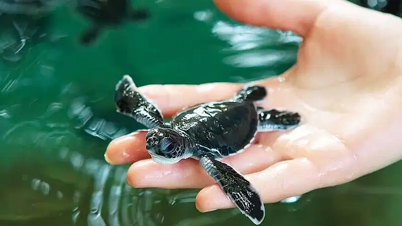
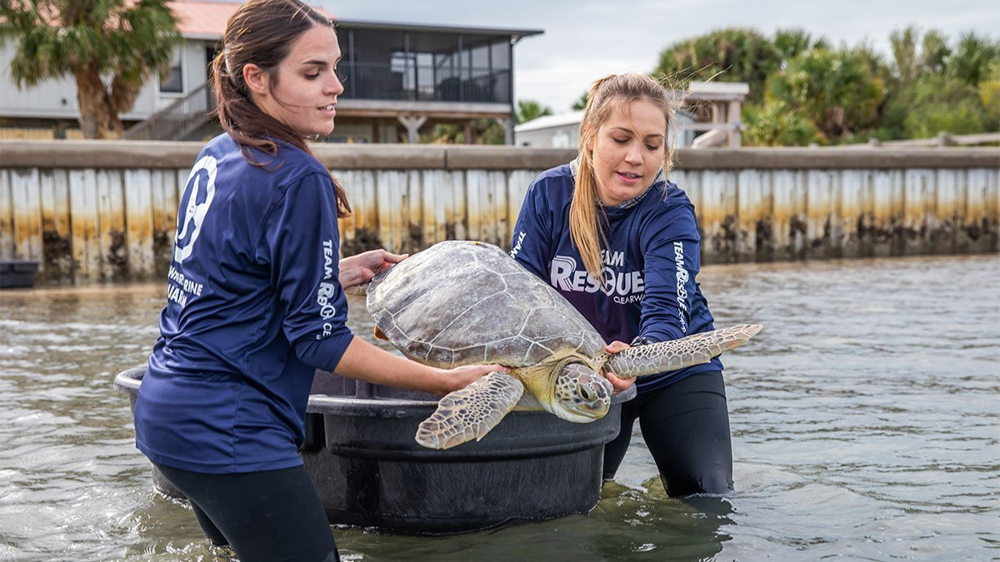

The Hikkaduwa Turtle Hatchery plays a crucial role in protecting and preserving endangered sea turtles. The hatchery primarily focuses on rescuing turtle eggs and providing a safe environment for their incubation until hatching. The vulnerable hatchlings are then released into the ocean, increasing their chances of survival.Visitors to the hatchery can witness various stages of the turtle's life cycle, from the incubation of eggs to the release of the hatchlings.Knowledgeable staff members offer informative tours, sharing insights about the different species of sea turtles and the conservation efforts taking place. Below are things we can do at Hikkaduwa turtle hatchery
 Offer guided tours of the Hikkaduwa turtle hatchery, where visitors can learn about the different turtle species, their life cycles, and the hatchery's conservation efforts. Provide knowledgeable staff or volunteers who can educate visitors about the challenges faced by turtles and the measures taken to protect them.
 Organize turtle release programs where visitors can actively participate in releasing baby turtles into the ocean. This hands-on experience allows people to witness the turtles' journey back to their natural habitat while promoting a sense of stewardship and responsibility towards marine life.
Provide volunteering opportunities for individuals who are passionate about turtle conservation. Allow volunteers to assist in various activities such as cleaning the tanks, feeding the turtles, maintaining the hatchery area, and educating visitors about turtle conservation. By involving volunteers, you can not only enhance the hatchery's operations but also empower individuals to actively contribute to turtle conservation efforts.